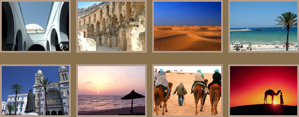

- 突尼斯，对于世界旅游者已不陌生。热情的突尼斯人用他们的微笑、茉莉花环和热腾腾的薄荷茶欢迎
着四方来客。突尼斯犹如神秘宝盒，珍藏着无穷的宝藏。她集结着非洲、欧洲、阿拉伯伊斯兰等众文化于
一身，尽管国土面积不大，但景色却是如此的千变万化：从南部纯美的沙漠绿洲到北部无尽的细沙海滩，
从撒哈拉的绿色橄榄树到杰尔巴海边的棕榈树，从阳光海滨到古罗马遗址，从冲浪到高尔夫，从海水浴到
南撒哈拉沙丘探险，再加上沙漠中不断出现的海市蜃楼，一切让人沉醉留恋。
让我们乘上一千零一夜中的飞毯，去游历突尼斯这个梦境中迷人多彩的神话王国：突尼斯城的欧洲风 情； 西迪.布.萨以德的秀丽隽永；塔巴赫卡的礁石林立； 苏塞、哈马马特的海滩浪漫； 杰尔巴的温柔 情怀；托泽尔的棕榈成林； 杜兹的骆队风姿；马特玛塔的星球大战痕迹；再就是撒哈拉的大漠苍茫。
在你随着空间转换时，又如同进入了神奇的时光穿梭机，故国神游中仿佛亲眼目睹着：腓尼基人在迦 太基的盛大繁荣；罗马人在艾尔•杰姆斗兽场观看人兽厮杀时的欢声雷动；阿拉伯人在凯鲁万建立城池的 踌躇满志，壮志情怀；杜迦，满眼的断壁残垣，你又不禁会感慨岁月如梦，历史沧桑多变。
突尼斯，这个神奇美丽的国度，你在游览完后，定会忍不住问：“为什么造物主在地中海南岸造就了 这样的诱惑！”现在就跟随我们去体验一下突尼斯的多样风情吧！ - 
- DIS-TOURS创建于2006年，总部位于突尼斯，是加拿大DIS集团有限公司的旗下子公司。我们的任务是为中国朋友策划精彩的突尼斯之旅，并提供优质的地接服务。专业的经验、热情的接待以及诚信的服务使DIS-TOURS不断赢得客户的赞赏与支持。建立DIS-TOURS是Issam Hechmi 先生和我们团队每一位成员的共同心愿，我们致力于为您打造适应当地文化及生活方式、并能满足您多种需求的精品旅游项目。
DIS-TOURS是您在突尼斯的最理想伙伴，因为：
- 我们在中国上海设有联络处，工作人员将随时随地为您真诚服务。
- 我们的旅游项目均由行业专家及对中国充满兴趣的专业人员操作。
- 我们悉心挑选突尼斯当地的合作伙伴，全面考虑您的点滴需求，确保服务的质量与效率。
- 我们为您提供精通中文的突尼斯导游。
- 我们与您共享我们在突尼斯的商业网络，助您亲密接触突尼斯当地的相关产业协会及贸易团体，与您交换合作及洽谈的经验，促进双方的深入沟通与共同发展。
- 我们为您精心准备详细的行程册，切实担当一切责任，确保您的安全与旅途舒适。
- 用心倾听您的建议，尽心满足您的需求，我们承诺“旅行前-旅行中-旅行后”的连续贴心服务――24小时全天候，周日无休。
- 我们拥有完备的应急预案体系，能够快速应付、并解决突发事件，确保您的旅途安然无忧。
现在就联系我们，加入DIS-TOURS的突尼斯“地中海――撒哈拉经典浪漫之旅”！体验从沙滩到沙漠，从肃穆到宁静，从感觉到感受的非凡享受！
DIS-TOURS
中国上海市长宁区遵义南路88号协泰中心大厦2606室
电话：+86 21 62751181
传真：+86 21 62786104
www.dis-tours.com
中国上海市长宁区遵义南路88号协泰中心大厦2606室
电话：+86 21 62751181
传真：+86 21 62786104
www.dis-tours.com